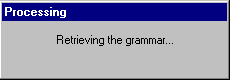
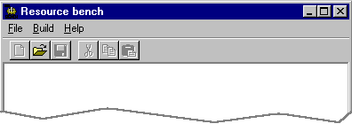
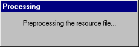
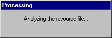
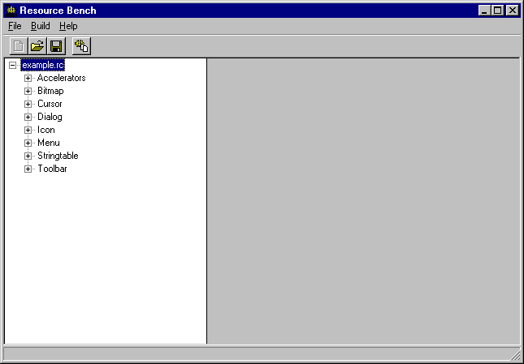
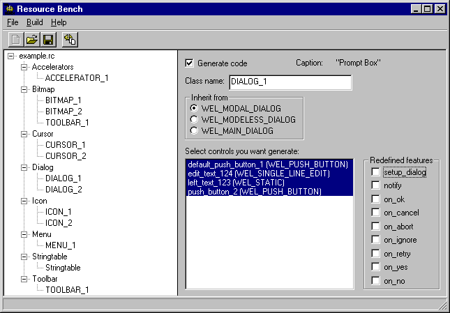
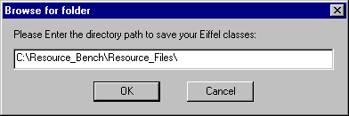

A Tour of the Eiffel Resource Bench1 - Launch Resource Bench. A small initialization dialog box appears:  Then you get the main window of Resource Bench:  2 - Open a resource file; the first time around, we suggest you choose the example.rc file provided with the release . Resource Bench parses the file. A dialog box will inform you of the progress of the parsing. The first step is the preprocessing of the resource file:  Then the analysis phase:  3 - After these two steps you will see a hierarchical view of the resource file that shows what resource types are included in the resource file. Here is the result for the example.rc file:  You can expand the tree view to see associated resources for each resource type:  At this point you are able to:
4 - To save a project, click on the Save button of the toolbar or select the Save item in the file menu. A standard Save dialog box will appear, letting you specify the file name of your project. The file extension for a Resource Bench project is .prb. 5 - To generate Eiffel code, select the "Generate Eiffel Code..." item in the Build menu. The following dialog box will appear to let you specify the target directory for the generated Eiffel classes:  6 - To generate a resource file, select the "Generate Resource file..." item in the Build menu. A standard Save dialog box will appear, letting you specify the file into which you can generate the resource file. |